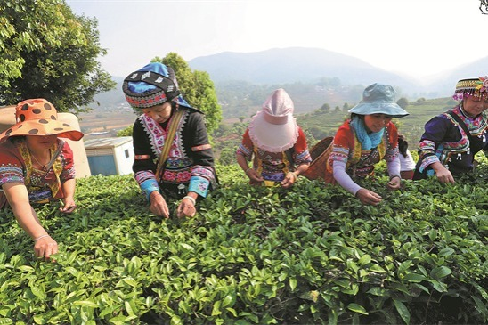

Ethnic At Cameron Highlands
In the Cameron Highlands, the Chinese community is quite important, especially in business and agriculture.
Here, a large number of Chinese Malaysians work on the renowned tea plantations in the area as well as in the vegetable growing industry.
The Mid-Autumn Festival and Chinese New Year, two cultural events that contribute to the joyous mood of the highlands,
are signs of the Chinese presence. Their cultural influence can be observed in the local festivals, food, and community structures,
as well as in their significant economic contribution to the area.
Learn More